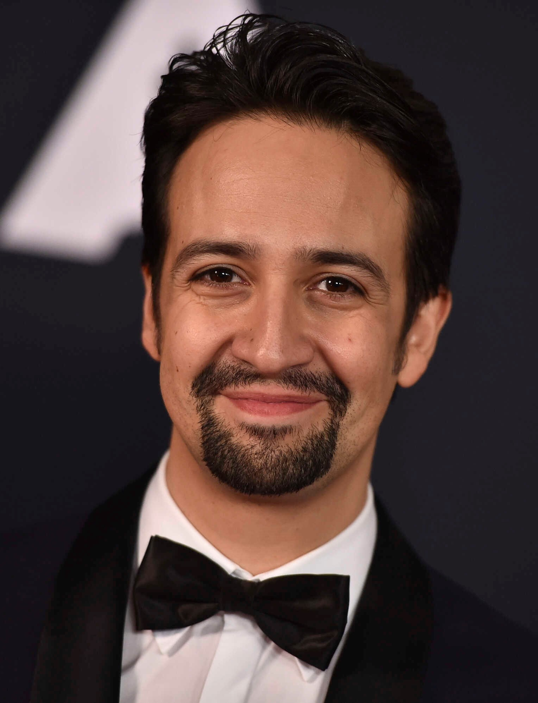

A Pulitzer Prize, Grammy, Emmy, Tony Award-winning songwriter, actor, producer and director, Lin-Manuel is the creator and original star of Broadway’s Hamilton and In the Heights, and the recipient of the 2015 MacArthur Foundation Award and 2018 Kennedy Center Honors. Mr. Miranda, and The Miranda Family, are active supporters of initiatives that increase the representation of people of color throughout the arts and government, ensure access to women’s reproductive health, and promote resilience in Puerto Rico. He lives with his family in New York.
l